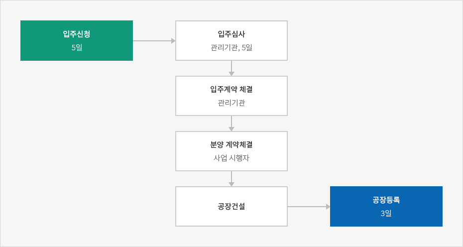
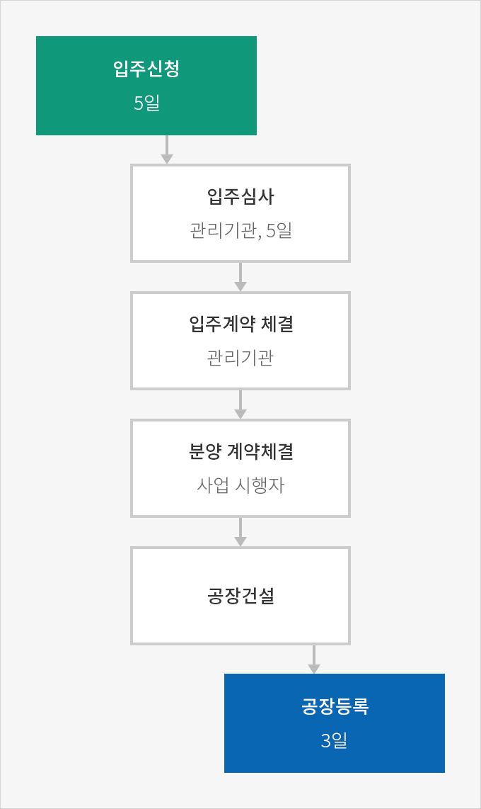
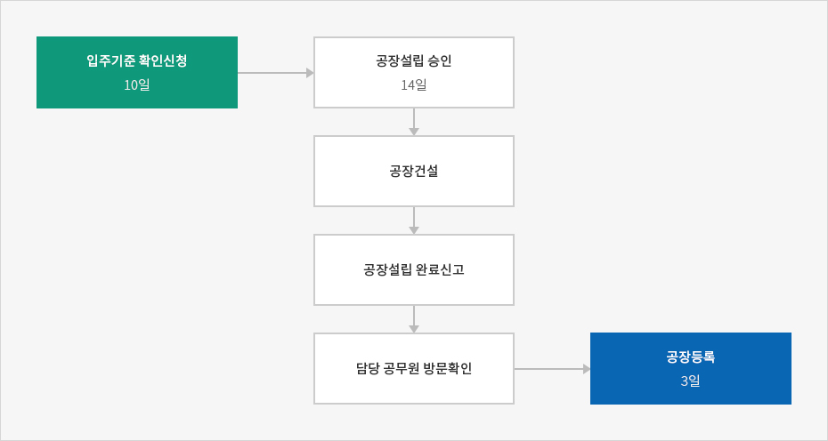
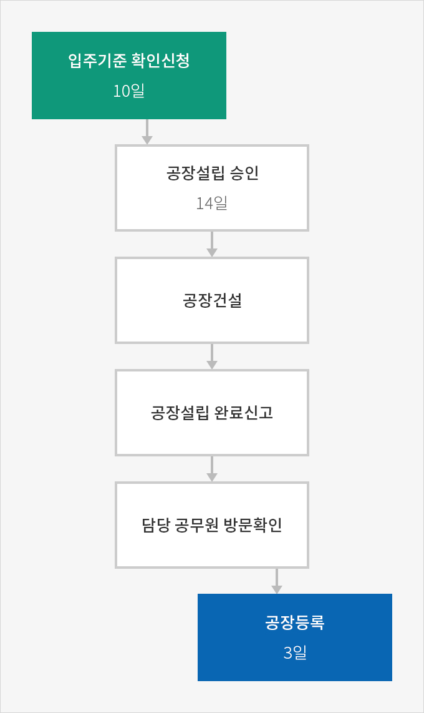

설립절차
- Home
- 경영·생활
- 공장설립
- 설립절차
공장설립
공장이란 제조업을 영위하기 위한 사업장으로, 건축물 또는 공장물, 제조시설과 그 부대시설을 총칭한다. 이때 제조업은 통계청장이 고시하는 표준산업분류에 의한 제조업을 말한다.
산업단지 공장 설립
산업단지는 개별입지와 달리 많은 부분들이 완비되어 있기 때문에 별도의 인허가를 받아야 하는 사항들이 많지 않고, 업종 또한 산업단지별로 제한되어 있어 검토에 필요한 시간이 대폭 단축된다. 산업단지는 개별입지의 ‘공장설립 승인신청’과 동일한 행정효과가 있는 ‘입주계약신청’을 관리기관에 한다. 일반적으로 신청 후 5일 내에 승인이 이루어지나 관계 기관 협의가 필요할 시에는 10일 내 승인이 이루어진다.
입주승인 후 공장건설, 완료신고, 담당 공무원의 현장 방문 확인 및 공장 등록까지의 절차는 개별입지의 절차와 같다.
공장설립 승인 절차



- 입주신청 (5일)
- 입주심사(관리기관, 5일)
- 입주계약 체결 (관리기관)
- 분양 계약체결 (사업 시행자)
- 공장건설
- 공장등록 (3일)

개별입지 공장 설립
「산업집적활성화 및 공장설립에 관한 법률」의 개별입지 공장 설립
개별입지의 경우 공장 설립에 관한 법령이 많아 모든 법령을 빠짐없이 검토하는 것이 중요하다. 신청 시 대한민국의 ‘공장설립 승인제도’에 따라 20일 이내에 검토 후 승인을 받는다. 설립하려는 공장 부지를 관할하는 해당 지방자치단체에 설립 신청을 한 경우에는 14일 내에 승인을받을 수 있다. 만약 의제처리가 적용되는 경우라면 7일 이내로 승인기간을 단축할 수 있다.- 의제처리 : 개별 법률에 의하여 각각 이행하여야 하는 인·허가를 일괄처리함으로써 행정업무의 효율성을 높이고 행정 서비스를 개선하고자 하는 제도


- 입주기준 확인신청(10일)
- 공장설립 승인 (14일)
- 공장건설
- 공장설립 완료신고
- 담당 공무원 방문확인
- 공장등록 (3일)

-
입주기준 확인신청해당 토지에 대한 공장 설립 가능 여부를 사전에 확인할 수 있는 제도로서, 지방자치단체에 ‘입지기준 확인신청’을한 후 10일 이내에 결과를 받을 수 있다.
-
공장건설공장설립을 승인받은 후에 토지 평탄화, 기반시설 설치, 건축 등을 시행한다.
-
공장등록건설 및 기계, 장치 설치 후 2개월 이내에 공장 설립 완료 신고를 하면 담당 공무원이 공장을 방문하여 최초 신청한 것과 같이 공장이 가동되고 있는지 확인한다. 문제가 없다고 판단되면 설립 완료 신고일로부터 3일 이내에 공장등록을 한다.
「중소기업창업 지원법」개별입지 공장 설립
제조업 중소기업 창업 부담금 면제 내용
| 부담금 | 관련법 |
|---|---|
| 분담금 | 「지방자치법」 제138조 |
| 농지보전 부담금 | 「농지법」 제38조 제①항 |
| 대체초지 조성비 | 「초지법」 제23조 제⑥항 |
| 기본 부과금 | 「대기환경보전법」 제35조 제②항 제1호 |
| 기본배출 부과금 | 「수질 및 수생태계 보전에 관한 법률」 제41조 제①항 제1호 |
| 부담금 | 「전기사업법」 제51조 제①항 |
| 폐기물 부담금 | 「자원의 절약과 재활용촉진에 관한 법률」 제12조 제①항 |
| 물이용 부담금 | 「한강수계 상수원 수질개선 및 주민지원 등에 관한 법률」제19조 제①항 |
| 「금강수계 물관리 및 주민지원 등에 관한 법률」제30조 제①항 | |
| 「낙동강수계 물관리 및 주민지원 등에 관한 법률」제32조 제①항 | |
| 「영산강·섬진강 수계 물관리 및 주민지원 등에 관한 법률」제30조 제①항 | |
| 대체산림 지원 조성비 | 「산지관리법」 제19조 제①항 |